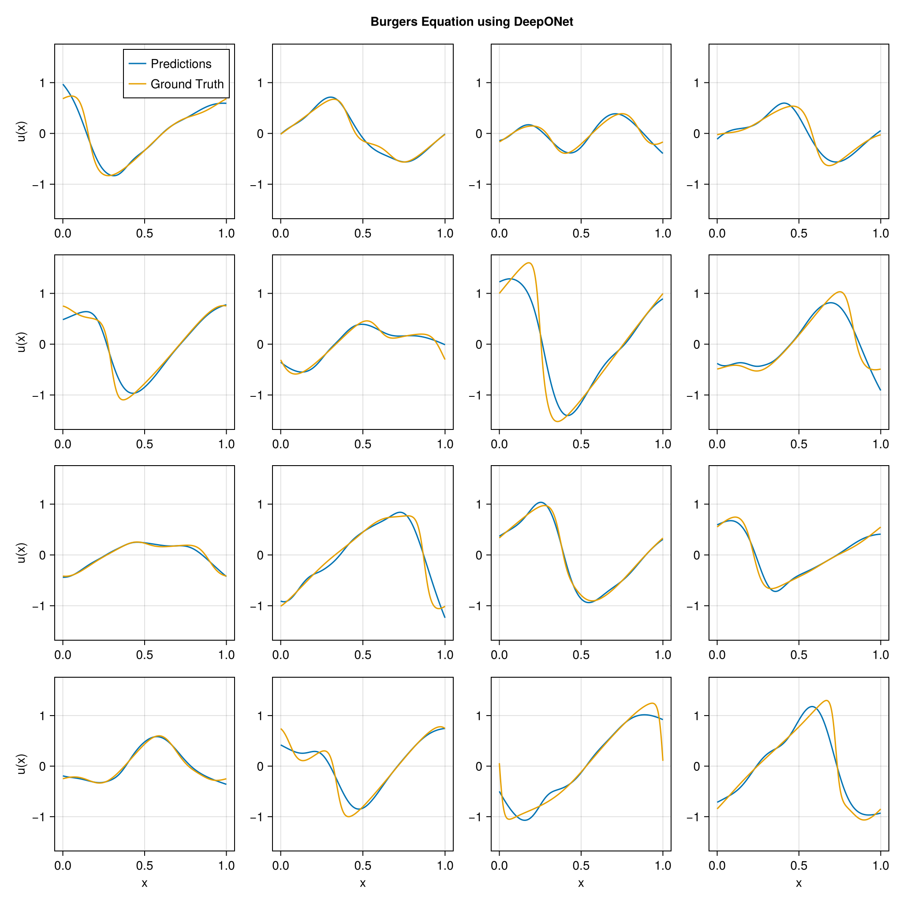

using DataDeps, MAT, MLUtils
using PythonCall, CondaPkg # For `gdown`
using Printf
const gdown = pyimport("gdown")
register(
DataDep(
"Burgers",
"""
Burgers' equation dataset from
[fourier_neural_operator](https://github.com/zongyi-li/fourier_neural_operator)
mapping between initial conditions to the solutions at the last point of time \
evolution in some function space.
u(x,0) -> u(x, time_end):
* `a`: initial conditions u(x,0)
* `u`: solutions u(x,t_end)
""",
"https://drive.google.com/uc?id=16a8od4vidbiNR3WtaBPCSZ0T3moxjhYe",
"9cbbe5070556c777b1ba3bacd49da5c36ea8ed138ba51b6ee76a24b971066ecd";
fetch_method=(url,
local_dir) -> begin
pyconvert(String, gdown.download(url, joinpath(local_dir, "Burgers_R10.zip")))
end,
post_fetch_method=unpack
)
)
filepath = joinpath(datadep"Burgers", "burgers_data_R10.mat")
const N = 2048
const Δsamples = 2^3
const grid_size = div(2^13, Δsamples)
const T = Float32
file = matopen(filepath)
x_data = reshape(T.(collect(read(file, "a")[1:N, 1:Δsamples:end])), N, :, 1)
y_data = reshape(T.(collect(read(file, "u")[1:N, 1:Δsamples:end])), N, :, 1)
close(file)
x_data = permutedims(x_data, (2, 1, 3))
grid = reshape(T.(collect(range(0, 1; length=grid_size)')), :, grid_size, 1)
1×1024×1 Array{Float32, 3}:
[:, :, 1] =
0.0 0.000977517 0.00195503 … 0.997067 0.998045 0.999022 1.0
using Lux, NeuralOperators, Optimisers, Zygote, Random
using LuxCUDA
const cdev = cpu_device()
const gdev = gpu_device()
deeponet = DeepONet(;
branch=(size(x_data, 1), ntuple(Returns(32), 5)...),
trunk=(size(grid, 1), ntuple(Returns(32), 5)...),
branch_activation=tanh,
trunk_activation=tanh
)
ps, st = Lux.setup(Random.default_rng(), deeponet) |> gdev;
((branch = (layer_1 = (weight = Float32[-0.034557536 0.009961299 … -0.062489327 0.05817881; 0.06399337 -0.033446778 … 0.02217816 -0.0003812288; … ; -1.6227765f-5 0.0044655926 … -0.04774406 0.08937045; 0.038403332 0.031602964 … 0.011453243 -0.049273808], bias = Float32[0.008025378, 0.001627706, -0.02112478, -0.0006741397, -0.005865626, 0.024310175, 0.008728839, -0.004794486, -0.005114712, 0.02301298 … 0.021797046, 0.027567279, -0.00080450997, 0.012612704, -0.026725903, 0.018111784, 0.022558253, -0.003423132, 0.031145778, 0.02286841]), layer_2 = (weight = Float32[0.47349724 -0.19636844 … -0.047621135 0.3440029; -0.28779715 -0.5036407 … 0.015625145 0.45877948; … ; 0.052170098 0.18297832 … -0.12163054 0.07595986; 0.2429956 0.057369072 … -0.3155327 0.027084334], bias = Float32[0.10371675, 0.010565646, 0.010233487, -0.124359906, 0.034392904, 0.06367873, -0.17082849, -0.07059808, -0.07600312, 0.047142074 … 0.1295627, 0.010717164, 0.055481225, -0.0041350485, -0.07564959, 0.13994443, -0.1029617, 0.13113956, 0.050735556, -0.03827838]), layer_3 = (weight = Float32[-0.12272208 0.1844216 … -0.07050472 0.2678909; -0.3467091 0.34071088 … -0.04508236 0.19779949; … ; -0.40347677 -0.2139464 … -0.03641179 0.47512576; -0.26649654 0.3903287 … -0.4473438 0.376963], bias = Float32[0.0027826824, 0.1686152, 0.053926557, 0.046267882, -0.096810386, 0.14626244, 0.16985635, 0.07697747, -0.10124994, -0.018858649 … -0.0987237, -0.07270605, 0.1480018, -0.07795681, -0.08835846, 0.05959339, 0.03792875, -0.12142657, 0.121039174, -0.023045855]), layer_4 = (weight = Float32[0.06539121 -0.07056567 … -0.20330688 0.4562996; 0.3343705 -0.06335207 … -0.40036762 -0.19335723; … ; -0.37887102 0.085340425 … -0.24375135 0.39086464; 0.2543224 0.4345606 … -0.4839387 0.4391404], bias = Float32[-0.00061022316, -0.16906945, 0.068936795, 0.12154013, -0.07103333, 0.13468498, -0.12116983, -0.09055568, -0.060128085, 0.16575755 … 0.06770704, -0.029342277, -0.14566866, 0.056761395, -0.058786552, -0.09596033, -0.14796367, -0.0038624215, -0.023950895, 0.15310892]), layer_5 = (weight = Float32[0.09105139 -0.065192685 … 0.08686682 -0.14960825; 0.0011112499 -0.13188767 … -0.01917595 -0.025284229; … ; -0.11973634 -0.016052844 … 0.009365415 -0.065281995; 0.021028483 0.20773953 … -0.056953628 -0.05326338], bias = Float32[0.12757777, 0.15222946, 0.13626438, -0.007083094, -0.055982288, 0.13340116, -0.04620656, 0.0008591635, -0.072364666, -0.11513615 … -0.07615609, -0.018022792, 0.08307589, -0.028279882, 0.053123847, -0.1081089, -0.006825661, -0.12947309, -0.17253982, 0.042024728])), trunk = (layer_1 = (weight = Float32[-0.13686882; 1.3055236; … ; -2.2320936; -2.2717474;;], bias = Float32[0.71948147, 0.38159692, -0.7885636, 0.17538643, -0.17392612, -0.5503613, -0.20432973, 0.050157905, -0.7605001, 0.27167463 … -0.1655922, 0.18588269, -0.9770881, 0.33847237, -0.80345106, 0.36073446, -0.7907195, 0.6104466, 0.9435326, 0.45303273]), layer_2 = (weight = Float32[0.5065646 0.17227657 … -0.40685266 0.3066285; 0.48166722 0.25268605 … -0.25719658 -0.107441805; … ; 0.43743464 -0.18380268 … 0.08870739 -0.3508265; -0.07542574 -0.32483876 … 0.33171302 0.14088874], bias = Float32[-0.17117696, -0.0022740543, 0.060239818, -0.09407632, -0.014946327, -0.1198598, -0.067229725, 0.047015842, 0.121899515, 0.087099016 … 0.12521234, 0.07469422, -0.009140155, 0.00957176, 0.092233405, -0.0041047027, -0.06510805, 0.061944384, -0.0935377, -0.018275484]), layer_3 = (weight = Float32[-0.44129393 0.4242364 … -0.47866234 -0.26869306; -0.1948367 0.42294228 … 0.24724558 -0.3053929; … ; -0.27411067 -0.024210975 … 0.22825035 0.20652632; -0.44195938 -0.11819137 … 0.039260875 0.009239671], bias = Float32[-0.014036081, -0.13246909, 0.05580441, 0.07325236, 0.15482228, 0.04848209, -0.123132885, -0.025649792, 0.04212904, 0.12406085 … 7.965755f-6, -0.13539872, 0.032844152, -0.15179503, 0.14251485, 0.10514518, -0.097571954, -0.07183867, 0.016016876, 0.0039968067]), layer_4 = (weight = Float32[-0.27330175 0.20005697 … 0.41582304 -0.071924575; -0.35597262 -0.40664524 … 0.2505629 0.38710847; … ; -0.17742 0.32507783 … -0.1662277 -0.30406293; -0.26278245 0.3801575 … 0.43626592 -0.1490449], bias = Float32[-0.10078915, -0.10574432, 0.1239264, -0.14948054, 0.011466745, -0.08761569, -0.103881046, -0.10346369, -0.086109236, -0.075872295 … 0.021007212, 0.11031017, 0.1510759, -0.14842969, -0.06873778, 0.077293, -0.17160802, 0.0048565604, 0.06873158, -0.14925537]), layer_5 = (weight = Float32[0.032316294 0.23799735 … -0.003920856 -0.21700431; -0.24735273 0.14007373 … 0.23435995 0.2593448; … ; 0.08309824 0.2669245 … 0.040354814 0.022523899; 0.28737408 0.11268147 … 0.030834092 -0.15980747], bias = Float32[-0.15990639, -0.08503232, -0.09576126, 0.10357107, -0.14390674, -0.13081048, 0.0069097863, 0.09774292, 0.13542207, -0.01351327 … 0.108328275, -0.0703157, 0.0060975533, -0.12273936, -0.020429041, -0.049682096, -0.08414709, 0.14538725, -0.17381957, -0.16468404])), additional = NamedTuple()), (branch = (layer_1 = NamedTuple(), layer_2 = NamedTuple(), layer_3 = NamedTuple(), layer_4 = NamedTuple(), layer_5 = NamedTuple()), trunk = (layer_1 = NamedTuple(), layer_2 = NamedTuple(), layer_3 = NamedTuple(), layer_4 = NamedTuple(), layer_5 = NamedTuple()), additional = NamedTuple()))
x_data_dev = x_data |> gdev
y_data_dev = y_data |> gdev
grid_dev = grid |> gdev
function loss_function(model, ps, st, ((v, y), u))
û, stₙ = model((v, y), ps, st)
return MAELoss()(û, u), stₙ, (;)
end
function train_model!(model, ps, st, data; epochs=5000)
train_state = Training.TrainState(model, ps, st, Adam(0.0001f0))
for epoch in 1:epochs
_, loss,
_,
train_state = Training.single_train_step!(
AutoZygote(), loss_function, data, train_state)
if epoch % 25 == 1 || epoch == epochs
@printf("Epoch %d: loss = %.6e\n", epoch, loss)
end
end
return train_state.parameters, train_state.states
end
ps_trained,
st_trained = train_model!(
deeponet, ps, st, ((x_data_dev, grid_dev), y_data_dev))
((branch = (layer_1 = (weight = Float32[-0.039783046 0.004310851 … -0.066807106 0.053398654; 0.06305312 -0.034678057 … 0.021830857 -0.0010259729; … ; -0.0010797849 0.0038305025 … -0.049618132 0.08789324; 0.035835464 0.029260611 … 0.008499484 -0.052046325], bias = Float32[-0.029885726, 0.031840578, -0.045148965, -0.04300951, -0.13835254, 0.047552235, 0.07443628, -0.112795256, -0.06795743, 0.18364725 … -0.031198392, 0.13410461, 0.0054647718, 0.047175508, -0.09491372, -0.10308914, -0.11590138, -0.015884453, 0.10474542, 0.019070372]), layer_2 = (weight = Float32[0.46633542 -0.20606886 … 0.0022574873 0.38081703; -0.2897378 -0.35916674 … 0.036338933 0.47682828; … ; 0.058577124 0.17982203 … -0.0967235 0.09981471; 0.24968038 0.03193251 … -0.27811947 0.02176241], bias = Float32[0.10155694, 0.02908475, 0.026475528, -0.2550116, -0.021483226, 0.11788241, -0.16316968, -0.050055906, -0.10452176, 0.13811497 … 0.1961275, 0.11106622, 0.08559782, 0.14614779, -0.12545672, 0.1591656, -0.10124423, 0.1735237, 0.045299962, -0.07071138]), layer_3 = (weight = Float32[-0.09337448 0.12466265 … -0.090841725 0.2708052; -0.3297285 0.3066388 … -0.05942972 0.23495208; … ; -0.43258935 -0.20844668 … -0.017226636 0.4835776; -0.28096676 0.36946085 … -0.49208266 0.3399991], bias = Float32[0.023604661, 0.115712255, 0.051730663, 0.017331202, -0.1577431, 0.17179883, 0.19554028, 0.17219181, -0.2217348, -0.0066193733 … -0.14815643, -0.07543044, 0.14352866, -0.120030954, -0.19117627, 0.06631856, 0.15357013, -0.12891755, 0.13021193, -0.01339743]), layer_4 = (weight = Float32[0.09314547 -0.09044142 … -0.15311414 0.49577484; 0.34818563 -0.095932126 … -0.37412113 -0.24765894; … ; -0.3437181 0.07509182 … -0.2156335 0.3859131; 0.27036807 0.44403338 … -0.467288 0.4630986], bias = Float32[0.04766178, -0.17613275, 0.07830111, 0.1461484, -0.04815249, 0.13261166, -0.18752208, -0.13398965, -0.09914675, 0.17662092 … 0.044617616, -0.04067369, -0.21241936, 0.065157205, -0.04285558, -0.10401633, -0.1761591, 0.074964084, -0.009316197, 0.18079217]), layer_5 = (weight = Float32[0.059728023 -0.087177746 … 0.09512073 -0.16171846; 0.033684023 -0.10005079 … -0.031313833 -0.0106872795; … ; -0.098439865 -0.030935142 … -0.01681336 -0.073675044; 0.026611676 0.2191649 … -0.062960535 -0.046792936], bias = Float32[0.07979967, 0.14018108, 0.14017224, -0.023308927, -0.039910745, 0.13872352, -0.045591947, 0.011312199, -0.06763739, -0.11061051 … -0.07699695, -0.00896487, 0.0866203, -0.042074166, 0.048541717, -0.10814264, 0.0036651308, -0.13886021, -0.1711075, 0.041251402])), trunk = (layer_1 = (weight = Float32[-0.15525365; 1.3283206; … ; -2.1497402; -2.2393906;;], bias = Float32[0.6985398, 0.41961238, -0.8023485, 0.17029835, -0.18091252, -0.5306167, -0.20697762, 0.047693726, -0.75417846, 0.30746964 … -0.17987294, 0.20440747, -1.0112944, 0.37102798, -0.8670054, 0.33330855, -0.80130416, 0.65446115, 1.1235137, 0.51810724]), layer_2 = (weight = Float32[0.49918735 0.15791969 … -0.42551592 0.33544564; 0.3887619 0.20647493 … -0.51938343 -0.23982872; … ; 0.42023927 -0.20078038 … 0.07364504 -0.33981213; -0.064769246 -0.30653274 … 0.34658745 0.0984169], bias = Float32[-0.17934665, -0.08601356, 0.06390972, -0.109655604, -0.019350015, -0.13130544, -0.05384916, 0.036460347, 0.116499096, 0.08165661 … 0.04929436, 0.08913785, 0.012828973, 0.015334114, 0.114769235, -0.0052940473, -0.04469964, 0.05081134, -0.11039514, -0.0074421195]), layer_3 = (weight = Float32[-0.43544483 0.43663177 … -0.47829285 -0.2702479; -0.20337576 0.4119793 … 0.24346901 -0.29699102; … ; -0.27092606 -0.03493148 … 0.23365584 0.19988756; -0.4330855 -0.059507933 … 0.037825573 0.0042504454], bias = Float32[-0.013008021, -0.13641131, 0.04082246, 0.069545045, 0.15861057, 0.06318377, -0.10189205, -0.0328715, 0.025689412, 0.12346714 … 0.008167035, -0.15873577, 0.025439743, -0.133403, 0.14932325, 0.113657385, -0.11587992, -0.06995707, 0.02402315, 0.0029580668]), layer_4 = (weight = Float32[-0.25900033 0.21932825 … 0.39249307 -0.05522146; -0.35060728 -0.4169763 … 0.24667233 0.38774097; … ; -0.1266393 0.32687208 … -0.1809982 -0.3465526; -0.30758056 0.4174875 … 0.43682593 -0.15057649], bias = Float32[-0.0913727, -0.10552096, 0.108680576, -0.16278777, 0.020011576, -0.05000142, -0.116630994, -0.0934235, -0.09077461, -0.083353765 … 0.0123151, 0.103376396, 0.13810308, -0.15085222, -0.08242079, 0.08793738, -0.18688077, -0.00045532815, 0.05831264, -0.14181876]), layer_5 = (weight = Float32[0.021652684 0.22752316 … -0.0062611056 -0.22850302; -0.23701255 0.111675724 … 0.24058813 0.24712433; … ; 0.08411612 0.2633001 … 0.03957941 0.00974471; 0.2615221 0.15847895 … 0.023242222 -0.17073539], bias = Float32[-0.1652993, -0.09516826, -0.11129482, 0.11686362, -0.14541121, -0.12913206, 0.004192437, 0.08774486, 0.10157809, -0.021566637 … 0.11548248, -0.079821184, 0.015458129, -0.12653989, 0.0006493879, -0.05872258, -0.096060805, 0.13799821, -0.17393143, -0.16898067])), additional = NamedTuple()), (branch = (layer_1 = NamedTuple(), layer_2 = NamedTuple(), layer_3 = NamedTuple(), layer_4 = NamedTuple(), layer_5 = NamedTuple()), trunk = (layer_1 = NamedTuple(), layer_2 = NamedTuple(), layer_3 = NamedTuple(), layer_4 = NamedTuple(), layer_5 = NamedTuple())))
using CairoMakie
pred = first(deeponet((x_data_dev, grid_dev), ps_trained, st_trained)) |> cdev
begin
fig = Figure(; size=(1024, 1024))
axs = [Axis(fig[i, j]) for i in 1:4, j in 1:4]
for i in 1:4, j in 1:4
idx = i + (j - 1) * 4
ax = axs[i, j]
l1 = lines!(ax, vec(grid), pred[idx, :, 1])
l2 = lines!(ax, vec(grid), y_data[idx, :, 1])
i == 4 && (ax.xlabel = "x")
j == 1 && (ax.ylabel = "u(x)")
if i == 1 && j == 1
axislegend(ax, [l1, l2], ["Predictions", "Ground Truth"])
end
end
linkaxes!(axs...)
fig[0, :] = Label(fig, "Burgers Equation using DeepONet"; tellwidth=false, font=:bold)
fig
end
